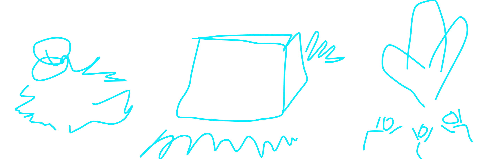
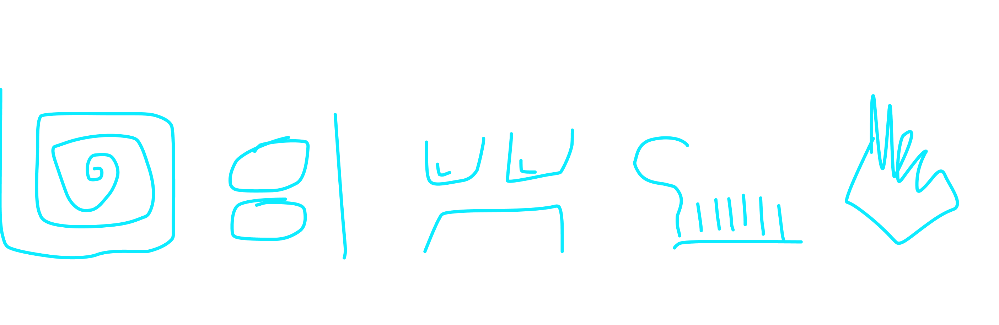

Представим, что всю свою жизнь вы хотели стать знаменитым исследователем. На земле их уже предостаточно, более того почти всё уже открыли до вас. Поэтому вы решили отправиться в космос и колонизировать новую планету.
К сожалению, ваша космическая одиссея пошла прахом, а корабль потерпел крушение. Вы оказались на незнакомой планете, очень похожей на Землю, и кажется тут ещё никто не живёт.
Поздравляем, вы колонизатор. Правда людей с вами нет, ресурсов у вас тоже нет. Несмотря на тысячелетия эволюции вы не умеете вспахивать поля, пасти скот, строить дома, проводить электричество, да и костёр вы разведёте с трудом. Как вас вообще взяли на космическую экспедицию?
Чтож, раз рассчитывать на спасение не стоит, выживать вы не умеете, а на родной Земле никто так про вас и не узнает, придётся искать известность тут. Самый лучший способ — озадачить своим присутствием будущую цивилизацию. Конкретно про вас они, конечно, не узнают. Зато с вашим наследием будут возиться долго, уж поверьте.
Помните, как в космической школе вас учили синтезировать еду из топлива? Нет? Очень жаль, вы бы могли протянуть на пару дней больше. Но вы в это время рисовали комиксы про космических пиратов. Что–ж, вот ваш первый подвиг: найдите любую пещеру и займитесь её декором.

Чем непонятнее вы будете рисовать, тем лучше. Придумайте необъяснимый и нелепый сюжет, например, как эта статья. Рисуйте существ с лишними руками и ногами, скетчи поклонения кукурузе, космический корабль в форме куба. Чем непонятнее и несвязнее будут иллюстрации — тем лучше. Ничего не объясняйте. Как только все разберутся о чём тут речь, про вас сразу забудут. Помните об этом.
